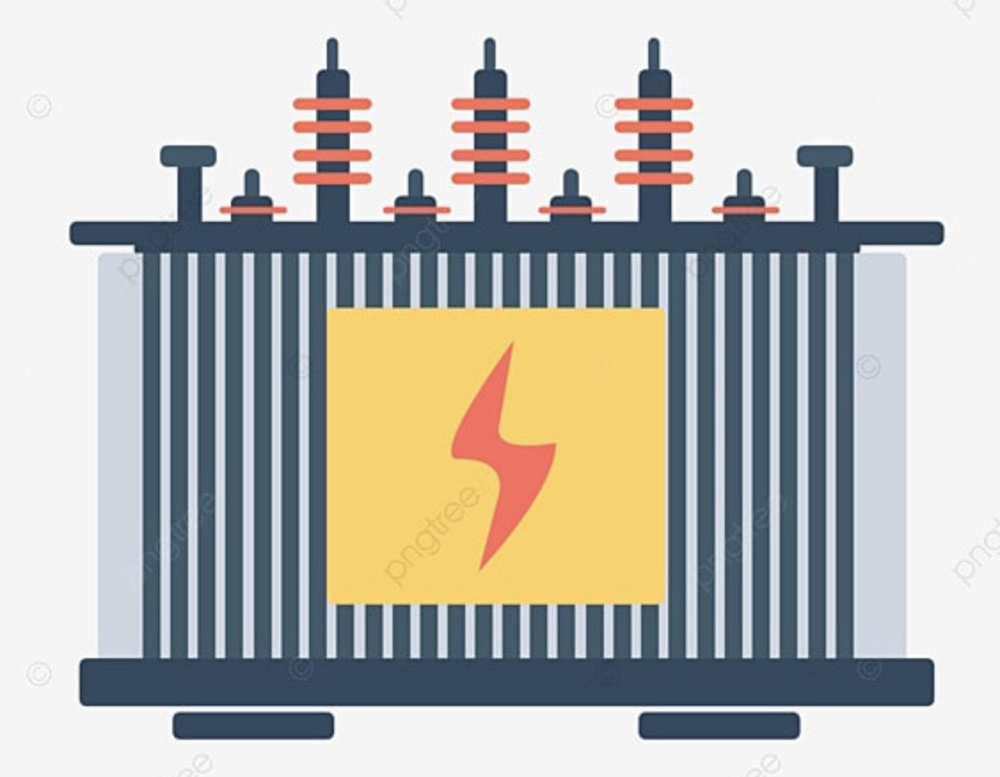

Name Florian Nakuci
phone 929 756 5952
email flori@alvespa.com
CV Resume
Objective
installation, maintenance, upgrading, troubleshooting, electrical systems, fire alarm systems and data networking in commercial and residential buildings.
abilities to read, follow, interpret, blu prints and schematic drawings from electrical engineering and architectural designing levels, providing safe reliable precise and secure distribution of electrical network AC wiring in the buildings; including from the power supply electrical company kw/h meters service all way down to the last em back up circuit, and power beck up generators.
wire gauging and proper phase-load balancing
check out my site for more detail spec
Experience
Building Mechanical Electrical Services inc
2010-2024
installation wiring maintenace of
Building Managment Systems contollers
Honeywell
Schneider Electric
Siemens
Johnson Controls
Automated Logic Corporation
Power and light electrical contractors inc
2000-2010
Knowledge and experience on Mounting installing
terminating-wires pipe-running of
Transformers Distribution-electrical-panels
Main-Breakers pipe-risers electrical-conductors
Disconect-switch-services Pull-boxes
Circuit-Breakers Power-Lights circuit-breaker-runs
Bx-cable splice-boxes EMT-galvonized-pipe
Dim-switches timers motion-sensors
Powering-HVAC-units fan-blower-motors thermostat-controllers
Fire-alarm-panels Damper-motors pull-stations
Strobe-horn-devices fire-alarm-cables
security-data monitoring-cameras
Electrical and motors
Elevators exhaust fans
Electrical motor inc
1996-2000
Start-and-stop push-buttons
Electrical motors and transformers delta-wye spliceing
Main-breakers home-runs
Residential kitchen-bathroom out-lets gfci counter-outlets
Led drivers-transformers
Very solid background of NEC
Education
CUNY City-University-of-New-York
1997-2005
Master in Electrical-Engineering
Computer-Technology computer programming
Electronics-components
Resitrors-Capacitors-Inductors
Diodes-rectifiers inverter-transformers
Transistors-amplifiers Filter-receivers circuits